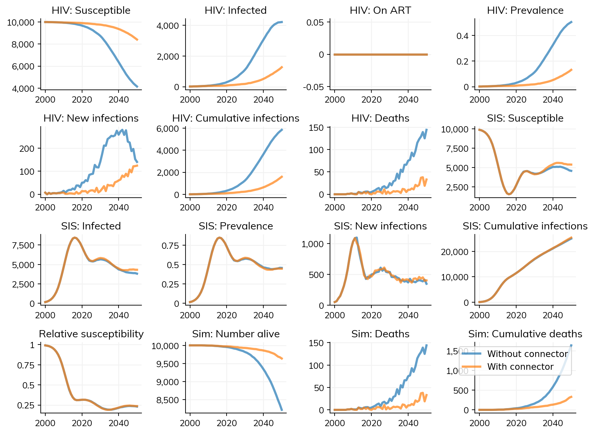

Connectors enable interactions between different modules in Starsim, particularly between disease models. They allow you to model complex epidemiological scenarios where one disease affects the transmission or progression of another disease. For example, you might want to model how having syphilis increases susceptibility to HIV, or how HIV affects the treatment outcomes of other sexually transmitted infections.
Basic concepts
A connector inherits from ss.Connector and implements custom logic to modify disease parameters or agent states based on the presence of other diseases. Connectors are called during each simulation timestep and can dynamically adjust transmission parameters, susceptibility, or other disease characteristics. Specifically, connectors are called after demographics and disease state updates, but before networks, interventions, and disease transmission updates. This means they can influence disease transmission for the current timestep.
Simple usage
The most straightforward way to use connectors is to define a custom class that inherits from ss.Connector and implements a step() method. This method is called during each simulation timestep and can modify disease parameters based on the current state of the simulation.
Here’s a simple example showing how HIV and “SIS” diseases can interact, and also illustrates how you would use an analyzer to compare the two simulations:
import starsim as ssss.options(jupyter=True)import starsim_examples as sseimport sciris as scimport numpy as npimport matplotlib.pyplot as pltsc.options(jupyter=True)class SIS_HIV(ss.Connector):""" Simple connector that modifies HIV susceptibility based on SIS infection status. People with SIS infection are protected from HIV (rel_sus = 0), while susceptible people have normal HIV susceptibility (rel_sus = 1). """def step(self):# Get disease modules hiv =self.sim.diseases.hiv sis =self.sim.diseases.sis sis_pos = (sis.infected).uids sis_neg = (sis.susceptible).uids# Modify HIV relative susceptibility based on SIS infection status hiv.rel_sus[sis_neg] =1.0# Reset to baseline hiv.rel_sus[sis_pos] =0# SIS-infected people cannot acquire HIVreturnclass check_connector(ss.Analyzer):""" Analyzer that tracks and plots HIV relative susceptibility and disease prevalence over time. """def__init__(self):super().__init__()self.time = sc.autolist() # Store timestepsself.rel_sus = sc.autolist() # Store mean HIV relative susceptibilityself.sis_prev = sc.autolist() # Store SIS prevalenceself.hiv_prev = sc.autolist() # Store HIV prevalencereturndef step(self):"""Record data at each timestep"""# Get disease references sis =self.sim.diseases.sis hiv =self.sim.diseases.hiv# Append current timestep dataself.time +=self.tiself.rel_sus += hiv.rel_sus.mean() # Average HIV relative susceptibilityself.sis_prev += sis.results.prevalence[self.ti] # SIS prevalenceself.hiv_prev += hiv.results.prevalence[self.ti] # HIV prevalencereturndef plot(self):""" Plot the time series of relative susceptibility and disease prevalence. """ fig = plt.figure()# Plot each metricfor key in ['rel_sus', 'sis_prev', 'hiv_prev']: plt.plot(self.time, self[key], label=key) plt.legend() plt.title(self.sim.label) plt.show()return fig# Create disease modelshiv = sse.HIV(beta=dict(mf=0.1, random=0), init_prev=0.001)sis = ss.SIS(beta=dict(mf=0.0, random=0.05))mf = ss.MFNet(duration=ss.lognorm_ex(mean=ss.years(5), std=ss.years(5)))# Configure simulation parameterspars =dict( diseases=[hiv, sis], networks=[mf,'random'], analyzers=check_connector(), verbose=0)# Create simulations with and without connectors1 = ss.Sim(label='Without connector', **pars)s2 = ss.Sim(label='With connector', **pars, connectors=SIS_HIV())# Run simulations in parallelmsim = ss.parallel(s1, s2)# Plot resultsmsim.plot()for sim in msim.sims: sim.analyzers[0].plot()
Figure(896x672)

In this example, the connector modifies HIV susceptibility based on SIS infection status. You can see that when the connector is active, HIV transmission is significantly reduced because SIS-infected individuals cannot acquire HIV.
Advanced usage with parameters
For more complex interactions, you can define parameters in your connector class to control the strength and nature of the interactions. Here’s an example showing bi-directional interactions between HIV and syphilis:
class HIV_Syphilis(ss.Connector):""" Advanced connector showing bi-directional interactions between HIV and syphilis. Models how HIV affects syphilis susceptibility/transmission and vice versa, with different effects based on CD4 count (AIDS progression). """def__init__(self, **kwargs):super().__init__()self.define_pars( label='HIV-Syphilis', rel_sus_syph_hiv=2, # People with HIV are 2x more likely to acquire syphilis rel_sus_syph_aids=5, # People with AIDS are 5x more likely to acquire syphilis rel_trans_syph_hiv=1.5, # People with HIV are 1.5x more likely to transmit syphilis rel_trans_syph_aids=3, # People with AIDS are 3x more likely to transmit syphilis rel_sus_hiv_syph=2.7, # People with syphilis are 2.7x more likely to acquire HIV rel_trans_hiv_syph=2.7, # People with syphilis are 2.7x more likely to transmit HIV )self.update_pars(**kwargs)returndef step(self):"""Apply HIV-syphilis interactions based on CD4 count and infection status""" diseases =self.sim.diseases syph = diseases.syphilis hiv = diseases.hiv cd4 =self.sim.people.hiv.cd4# Reset relative susceptibility and transmission to baseline syph.rel_sus[:] =1.0 syph.rel_trans[:] =1.0 hiv.rel_sus[:] =1.0 hiv.rel_trans[:] =1.0# People with HIV are more likely to acquire syphilis syph.rel_sus[cd4 <500] =self.pars.rel_sus_syph_hiv syph.rel_sus[cd4 <200] =self.pars.rel_sus_syph_aids # AIDS stage# People with HIV are more likely to transmit syphilis syph.rel_trans[cd4 <500] =self.pars.rel_trans_syph_hiv syph.rel_trans[cd4 <200] =self.pars.rel_trans_syph_aids# People with syphilis are more likely to acquire HIV hiv.rel_sus[syph.active] =self.pars.rel_sus_hiv_syph# People with syphilis are more likely to transmit HIV hiv.rel_trans[syph.active] =self.pars.rel_trans_hiv_syphreturn# Create disease modelshiv = sse.HIV(beta={'mf': [0.0008, 0.0004]}, init_prev=0.2)syph = sse.Syphilis(beta={'mf': [0.1, 0.05]}, init_prev=0.05)# Create networkmf = ss.MFNet()# Configure simulation parameterskw =dict( diseases=[hiv, syph], networks=mf, n_agents=2000, verbose=0)# Create simulationss1 = ss.Sim(label='Without connector', **kw)s2 = ss.Sim(label='With connector', connectors=HIV_Syphilis(), **kw)# Run simulationsmsim = ss.parallel(s1, s2)# Compare resultsprint("\nFinal infection counts:")print(f"HIV infections - Without connector: {s1.results.hiv.n_infected[-1]}")print(f"HIV infections - With connector: {s2.results.hiv.n_infected[-1]}")print(f"Syphilis infections - Without connector: {s1.results.syphilis.n_infected[-1]}")print(f"Syphilis infections - With connector: {s2.results.syphilis.n_infected[-1]}")# Plot comparative resultsfig = plt.figure(figsize=(12, 4))# HIV infectionsplt.subplot(121)plt.plot(s1.timevec, s1.results.hiv.n_infected, label='Without connector', alpha=0.8)plt.plot(s2.timevec, s2.results.hiv.n_infected, label='With connector', alpha=0.8)plt.title('HIV infections over time')plt.xlabel('Year')plt.ylabel('Number infected')plt.legend()# Syphilis infectionsplt.subplot(122)plt.plot(s1.timevec, s1.results.syphilis.n_infected, label='Without connector', alpha=0.8)plt.plot(s2.timevec, s2.results.syphilis.n_infected, label='With connector', alpha=0.8)plt.title('Syphilis infections over time')plt.xlabel('Year')plt.ylabel('Number infected')plt.legend()plt.show()
Final infection counts:
HIV infections - Without connector: 134.0
HIV infections - With connector: 134.0
Syphilis infections - Without connector: 220.0
Syphilis infections - With connector: 392.0
This more complex example demonstrates several important concepts:
Parameter definition: Using define_pars() to set configurable parameters for the interaction strengths
Bi-directional effects: Both diseases affect each other’s transmission and susceptibility
Disease progression considerations: Different effects based on HIV progression (CD4 count)
Multiple attributes: Modifying both relative susceptibility (rel_sus) and relative transmission (rel_trans)
Combining connectors with interventions
Connectors can work alongside interventions to model complex treatment scenarios. Here’s an example that combines the HIV-syphilis connector with a treatment intervention:
class Penicillin(ss.Intervention):""" Penicillin treatment intervention for syphilis. Also resets HIV transmission/susceptibility parameters when syphilis is cured. """def__init__(self, year=2020, prob=0.8):super().__init__()self.prob = prob # Probability of receiving treatmentself.year = ss.date(year) # Year treatment becomes availablereturndef step(self): sim =self.simif sim.now >=self.year: syphilis = sim.diseases.syphilis# Define who is eligible for treatment (currently infected) eligible_ids = syphilis.infected.uids n_eligible =len(eligible_ids)if n_eligible >0:# Determine who receives treatment is_treated = np.random.rand(n_eligible) <self.prob treat_ids = eligible_ids[is_treated]# Cure syphilis syphilis.infected[treat_ids] =False syphilis.susceptible[treat_ids] =True# Reset HIV parameters (removes syphilis co-infection effects) sim.diseases.hiv.rel_sus[treat_ids] =1.0 sim.diseases.hiv.rel_trans[treat_ids] =1.0return# Create simulations with different combinationssims = {}# Base configurationbase_kw =dict( diseases=[sse.HIV(beta={'mf': [0.0008, 0.0004]}, init_prev=0.2), sse.Syphilis(beta={'mf': [0.1, 0.05]}, init_prev=0.05)], networks=ss.MFNet(), n_agents=2000, verbose=0)# 1. No connector, no treatmentsims['baseline'] = ss.Sim(label='Baseline (no connector, no treatment)', **base_kw)# 2. Connector onlysims['connector'] = ss.Sim(label='With connector only', connectors=HIV_Syphilis(), **base_kw)# 3. Connector + treatmentsims['both'] = ss.Sim(label='Connector + treatment', connectors=HIV_Syphilis(), interventions=Penicillin(year=2020, prob=0.8), **base_kw)# Run all simulationsmsim = ss.parallel(*sims.values())# Create comparison plotfig, ax = plt.subplots(2, 2, figsize=(12, 8))# HIV infectionsax[0,0].set_title('HIV infections over time')for sim in sims.values(): ax[0,0].plot(sim.timevec, sim.results.hiv.n_infected, label=sim.label, alpha=0.8)ax[0,0].axvline(2020, color='red', linestyle='--', alpha=0.5, label='Treatment start')ax[0,0].set_xlabel('Year')ax[0,0].set_ylabel('Number infected')ax[0,0].legend()# Syphilis infectionsax[0,1].set_title('Syphilis infections over time')for sim in sims.values(): ax[0,1].plot(sim.timevec, sim.results.syphilis.n_infected, label=sim.label, alpha=0.8)ax[0,1].axvline(2020, color='red', linestyle='--', alpha=0.5, label='Treatment start')ax[0,1].set_xlabel('Year')ax[0,1].set_ylabel('Number infected')ax[0,1].legend()# Cumulative HIV infectionsax[1,0].set_title('Cumulative HIV infections')for sim in sims.values(): ax[1,0].plot(sim.timevec, sim.results.hiv.cum_infections, label=sim.label, alpha=0.8)ax[1,0].set_xlabel('Year')ax[1,0].set_ylabel('Cumulative infections')ax[1,0].legend()# Cumulative syphilis infectionsax[1,1].set_title('Cumulative syphilis infections')for sim in sims.values(): ax[1,1].plot(sim.timevec, sim.results.syphilis.cum_infections, label=sim.label, alpha=0.8)ax[1,1].set_xlabel('Year')ax[1,1].set_ylabel('Cumulative infections')ax[1,1].legend()plt.tight_layout()plt.show()# Print summary statisticssc.heading("Final results summary:")for sim in sims.values(): hiv_final = sim.results.hiv.n_infected[-1] syph_final = sim.results.syphilis.n_infected[-1] hiv_cum = sim.results.hiv.cum_infections[-1] syph_cum = sim.results.syphilis.cum_infections[-1]print(f"{sim.label}:")print(f" HIV: {hiv_final:3.0f} current, {hiv_cum:4.0f} cumulative")print(f" Syphilis: {syph_final:3.0f} current, {syph_cum:4.0f} cumulative")
This example demonstrates how interventions and connectors work together. The treatment intervention not only cures syphilis but also resets the HIV transmission parameters, effectively removing the co-infection effects when syphilis is treated.